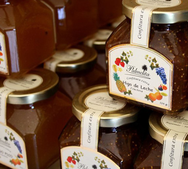

Confitures Artisanales des Canaries

Papaya
Confiture Extra Palmelita - Papaye - Orange 335 g

Papaya Diet
Confiture Extra Palmelita - Papaye - Orange - Diet 335 g
Mango
Confiture Extra Palmelita - Mangue 335 g

Kiwi
Confiture Extra Palmelita - Kiwi 335 g

Goyave
Confiture Extra Palmelita - Goyave 335 g

Ananas
Confiture Extra Palmelita - Ananas 335 g

Fraise
Confiture Extra Palmelita - Fraise 335 g

Orange
Confiture Extra Palmelita - Orange 335 g

Poivron
Confiture Extra Palmelita - Poivron 335 g

Citron
Confiture Extra Palmelita - Citron 335 g
Les Meilleures Confitures Canariennes : Guide pour les Palais Exigeants et les Professionnels
Lorsque l'on cherche l'essence des Îles Canaries, la saveur de ses fruits tropicaux est le véritable protagoniste. Les confitures canariennes ont évolué d'un produit traditionnel vers une référence de la gastronomie premium, particulièrement appréciée par les hôtels, restaurants et boutiques gourmet.
Qu'est-ce qui différencie une authentique confiture artisanale canarienne ?
Toutes les conserves ne répondent pas au standard de qualité exigé par un petit-déjeuner cinq étoiles. Pour reconnaître les meilleures confitures artisanales de Tenerife et de l'archipel, trois facteurs clés doivent être pris en compte :
- Origine de la matière première : fruits locaux tels que la papaye, la mangue, la goyave ou les bananes des Canaries.
- Technique de cuisson traditionnelle : recettes héritées des années 1960 qui privilégient la concentration naturelle du fruit.
- Sans additifs : une confiture de qualité extra n'a pas besoin de colorants ni de conservateurs artificiels.
Variétés incontournables
- Confiture de Papaye et Orange : équilibre parfait entre douceur tropicale et acidité citronnée.
- Confiture de Mangue : idéale pour accompagner les fromages canariens.
- Confiture de Goyave : essentielle dans les buffets d'hôtels.
- Options sans sucre : une tendance croissante dans la gastronomie saine.
L'héritage : Confitures Palmelita
Dans ce paysage, Confitures Palmelita se démarque. Fondée en 1968 par Werner Bittermann à Bajamar, elle a établi la norme de ce que signifie une confiture premium. Sa philosophie combine la tradition d'Europe centrale et la richesse des fruits tropicaux de Tenerife.
Choisir un fournisseur qui maintient des processus artisanaux garantit un produit supérieur et une histoire de qualité que les clients apprécient.
Où trouver des confitures de qualité professionnelle ?
La meilleure option est de se rendre directement dans les ateliers traditionnels ou de contacter des producteurs historiques comme Palmelita. Cela garantit la fraîcheur, la traçabilité et le soutien à l'économie locale canarienne.